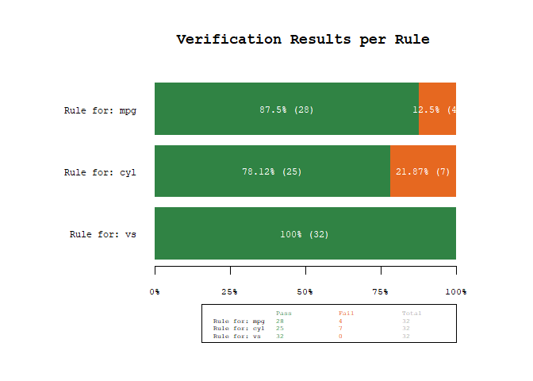
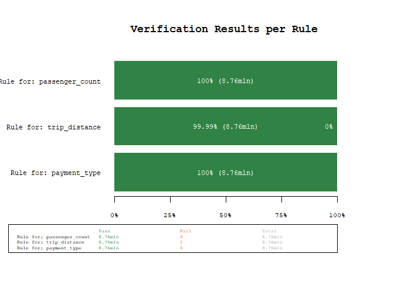

dataverifyr - a lightweight, flexible, and fast data validation package that can handle all datasizes
The goal of dataverifyr is to allow a wide variety of flexible data validation checks. That means, you can specify the rules/expressions in a yaml file, load it into R and compare any arbitrary dataset against it. The package is built in such a way, that you can use base-R, dplyr, data.table, arrow (both as an arrow_table as well as an open_dataset() connection), but also any DBI-compliant database (currently tested with RSQLite and duckdb).
The package is lightweight as all the heavy dependencies are Suggests-only, that means if you want to use data.table for the task, you don’t need to install the other packages (arrow, DBI, etc) unless you explicitly tell R to do so when installing the package.
The backend for your analysis is automatically chosen based on the input dataset as well as the available packages. By using the underlying technologies and handing all evaluation of code to the backends, this package can deal with all datasizes the backends can deal with.
Installation
You can install the development version of dataverifyr like so:
# development version
# devtools::install_github("DavZim/dataverifyr")
# CRAN release
install.packages("dataverifyr")Example
This is a basic example which shows you how to
- create a rule-set manually
- check if a dataset matches all given rules
- save the rules to a yaml-file for better maintainability
- load the rules from disk again
library(dataverifyr)
rules <- ruleset(
rule(mpg > 10 & mpg < 30), # mpg goes up to 34
rule(cyl %in% c(4, 8)), # missing 6 cyl
rule(vs %in% c(0, 1), allow_na = TRUE)
)
# print the rules
rules
#> <Verification Ruleset with 3 elements>
#> [1] 'Rule for: mpg' matching `mpg > 10 & mpg < 30` (allow_na: FALSE)
#> [2] 'Rule for: cyl' matching `cyl %in% c(4, 8)` (allow_na: FALSE)
#> [3] 'Rule for: vs' matching `vs %in% c(0, 1)` (allow_na: TRUE)
# check if the data matches our rules
res <- check_data(mtcars, rules)
res
#> name expr allow_na negate tests pass fail warn error time
#> 1: Rule for: mpg mpg > 10 & mpg < 30 FALSE FALSE 32 28 4 0.007985115 secs
#> 2: Rule for: cyl cyl %in% c(4, 8) FALSE FALSE 32 25 7 0.003337860 secs
#> 3: Rule for: vs vs %in% c(0, 1) TRUE FALSE 32 32 0 0.000428915 secs
# plot the results to get a better understanding of which rules are most often violated
plot_res(res)
# save the rules to yml
write_rules(rules, "example_rules.yaml")
cat(paste(readLines("example_rules.yaml"), collapse = "\n"))
#> - name: 'Rule for: mpg'
#> expr: mpg > 10 & mpg < 30
#> allow_na: no
#> negate: no
#> index: 1
#> - name: 'Rule for: cyl'
#> expr: cyl %in% c(4, 8)
#> allow_na: no
#> negate: no
#> index: 2
#> - name: 'Rule for: vs'
#> expr: vs %in% c(0, 1)
#> allow_na: yes
#> negate: no
#> index: 3
r2 <- read_rules("example_rules.yaml")
identical(rules, r2)
#> [1] TRUEBackends
At the moment the following backends are supported. Note that they are automatically chosen based on filetype (eg, when giving a dplyr::tbl() pointing to an SQLite database, the package will automatically choose DBI/dplyr for the task) and package availability.
| Backend | Library | Status | Comment |
|---|---|---|---|
base-R |
base |
✔️ | When data.table or dplyr are installed, they are leveraged for higher performance, but if requried, the package works with base-r only |
dplyr |
dplyr |
✔️ | |
data.table |
data.table |
✔️ | Used as the default when installed and no special data-format is given. |
Table/ArrowTabular
|
arrow |
✔️ | For example by using arrow::arrow_table()
|
FileSystemDataset |
arrow |
✔️ | For on disk storage using arrow::open_dataset(), very good for large datasets. See example below. |
sqlite |
RSQLite/DBI
|
✔️ | Note that missing values are converted to 0s when using sqlite by default (c.f. this SO answer). |
DuckDB |
duckdb/DBI
|
✔️ | |
postgreSQL |
RPostgres |
❓ | Not tested, but should work out-of-the-box through DBI
|
Larger Example using the arrow backend
For a more involved example, using a different backend, let’s say we have a larger dataset of taxi trips from NY (see also the official datasource), that we have saved as a local arrow dataset (using parquet as a data format).
1 Download and Prepare Data
First we prepare the data by downloading it and writing the dataset to .parquet files.
library(arrow)
url <- "https://d37ci6vzurychx.cloudfront.net/trip-data/yellow_tripdata_2018-01.parquet"
file <- "yellow_tripdata_2018-01.parquet"
if (!file.exists(file)) download.file(url, file, method = "curl")
file.size(file) / 1e6 # in MB
#> [1] 123.6685
# quick check of the filesize
d <- read_parquet(file)
dim(d)
#> [1] 8760687 19
names(d)
#> [1] "VendorID" "tpep_pickup_datetime" "tpep_dropoff_datetime" "passenger_count"
#> [5] "trip_distance" "RatecodeID" "store_and_fwd_flag" "PULocationID"
#> [9] "DOLocationID" "payment_type" "fare_amount" "extra"
#> [13] "mta_tax" "tip_amount" "tolls_amount" "improvement_surcharge"
#> [17] "total_amount" "congestion_surcharge" "airport_fee"
# write the dataset to disk
write_dataset(d, "nyc-taxi-data")Note that the above code is only used to get the data, the actual dataverifyr code is below.
2 Create Rules in yaml
Next, we can create some rules that we want to see if our data conforms to. As we saw earlier, we can create the rules in R using the rules() and ruleset() functions, there is however, the (in my case) preferred option to separate the code from the rules by writing the rules in a separate yaml file and read them into R.
First we display the hand-written contents of the nyc_data_rules.yaml file.
- name: 'Rule for: passenger_count'
expr: passenger_count >= 0 & passenger_count <= 10
allow_na: no
negate: no
index: 1
- name: 'Rule for: trip_distance'
expr: trip_distance >= 0 & trip_distance <= 1000
allow_na: no
negate: no
index: 2
- name: 'Rule for: payment_type'
expr: payment_type %in% c(0, 1, 2, 3, 4)
allow_na: no
negate: no
index: 3Then, we can load and display the rules:
rules <- read_rules("nyc_data_rules.yaml")
rules
#> <Verification Ruleset with 3 elements>
#> [1] 'Rule for: passenger_count' matching `passenger_count >= 0 & passenger_count <= 10` (allow_na: FALSE)
#> [2] 'Rule for: trip_distance' matching `trip_distance >= 0 & trip_distance <= 1000` (allow_na: FALSE)
#> [3] 'Rule for: payment_type' matching `payment_type %in% c(0, 1, 2, 3, 4)` (allow_na: FALSE)3 Verify that the Data matches the given Rules
Now we can check if the data follows our rules or if we have unexpected data points:
# open the dataset
ds <- open_dataset("nyc-taxi-data/")
# perform the data validation check
res <- check_data(ds, rules)
res
#> # A tibble: 3 × 10
#> name expr allow…¹ negate tests pass fail warn error time
#> <chr> <chr> <lgl> <lgl> <int> <int> <int> <chr> <chr> <drt>
#> 1 Rule for: passenger_count passenger_count … FALSE FALSE 8760687 8760687 0 "" "" 0.56…
#> 2 Rule for: trip_distance trip_distance >=… FALSE FALSE 8760687 8760686 1 "" "" 0.43…
#> 3 Rule for: payment_type payment_type %in… FALSE FALSE 8760687 8760687 0 "" "" 0.36…
#> # … with abbreviated variable name ¹allow_na
plot_res(res)
Using the power of arrow, we were able to scan 8+mln observations for three rules in about 1.5 seconds (YMMV). As we can see from the results, there is one unexpected value, lets quickly investigate using the [filter_fails()] function, which filters a dataset for the failed rule matches
res |>
filter_fails(ds) |>
# only select a couple of variables for brevity
dplyr::select(tpep_pickup_datetime, tpep_dropoff_datetime, trip_distance)
#> # A tibble: 1 × 3
#> tpep_pickup_datetime tpep_dropoff_datetime trip_distance
#> <dttm> <dttm> <dbl>
#> 1 2018-01-30 12:41:02 2018-01-30 12:42:09 189484.As we can see, this is probably a data error (a trip distance of 190k miles in 1 minute seems - ehm stellar…).
Using a DBI Backend
If you have a SQLite or duckdb database, you can use the package like this
library(DBI)
library(dplyr)
# connect to a duckdb database
con <- dbConnect(duckdb::duckdb("duckdb-database.duckdb"))
# for demo purposes write the data once
dbWriteTable(con, "mtcars", mtcars)
# create a tbl connection, which can be used in the checks
tbl <- tbl(con, "mtcars")
# create rules
rules <- ruleset(
rule(mpg > 10 & mpg < 40),
rule(cyl %in% c(4, 6, 8)),
rule(vs %in% c(0, 1), allow_na = TRUE)
)
# check rules
res <- check_data(tbl, rules)
res
#> # A tibble: 3 × 10
#> name expr allow_na negate tests pass fail warn error time
#> <chr> <chr> <lgl> <lgl> <dbl> <dbl> <dbl> <chr> <chr> <drtn>
#> 1 Rule for: mpg mpg > 10 & mpg < 40 FALSE FALSE 32 32 0 "" "" 0.04341698 secs
#> 2 Rule for: cyl cyl %in% c(4, 6, 8) FALSE FALSE 32 32 0 "" "" 0.03063011 secs
#> 3 Rule for: vs vs %in% c(0, 1) TRUE FALSE 32 32 0 "" "" 0.03730798 secs
# lastly disconnect from the database again
dbDisconnect(con, shutdown = TRUE)